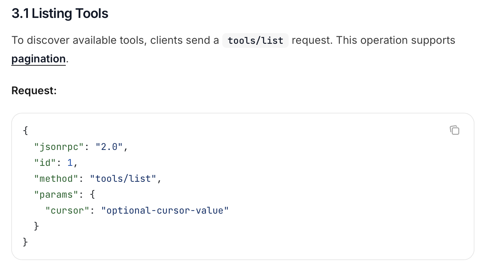
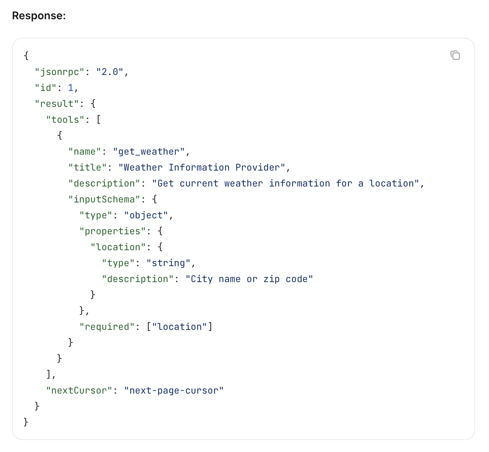

Tools 的发现与调用
正在读取本章记录下次复习：—
请通过“启动学习站.cmd”进入，才能写入数据库。
12.1 发现工具
Client 请求：
{
"jsonrpc": "2.0",
"id": 2,
"method": "tools/list"
}

Server 响应：
{
"jsonrpc": "2.0",
"id": 2,
"result": {
"tools": [
{
"name": "weather_current",
"title": "当前天气",
"description": "查询指定地点的当前天气",
"inputSchema": {
"type": "object",
"properties": {
"location": {"type": "string"},
"units": {
"type": "string",
"enum": ["metric", "imperial"]
}
},
"required": ["location"]
}
}
]
}
}

12.2 调用工具
{
"jsonrpc": "2.0",
"id": 3,
"method": "tools/call",
"params": {
"name": "weather_current",
"arguments": {
"location": "Guangzhou",
"units": "metric"
}
}
}
结果可以包含文本、图片、音频、资源链接、嵌入资源和结构化内容：
{
"jsonrpc": "2.0",
"id": 3,
"result": {
"content": [
{
"type": "text",
"text": "Guangzhou: 34°C, thunderstorm"
}
],
"structuredContent": {
"temperature_c": 34,
"condition": "thunderstorm"
},
"isError": false
}
}
12.3 工具列表动态变化
若 Server 声明 tools.listChanged，它可发送：
{
"jsonrpc": "2.0",
"method": "notifications/tools/list_changed"
}
Client 收到后重新调用 tools/list。通知只表示“发生变化”，不是把新工具直接塞给 Client。
12.4 Tool Annotations 只是提示
MCP 工具可声明 readOnlyHint、destructiveHint、idempotentHint、openWorldHint 等注解。但官方 schema 明确说明这些只是 hints，不能替代信任与安全判断。
来自不可信 Server 的工具即使自称只读，也不能据此自动放行。